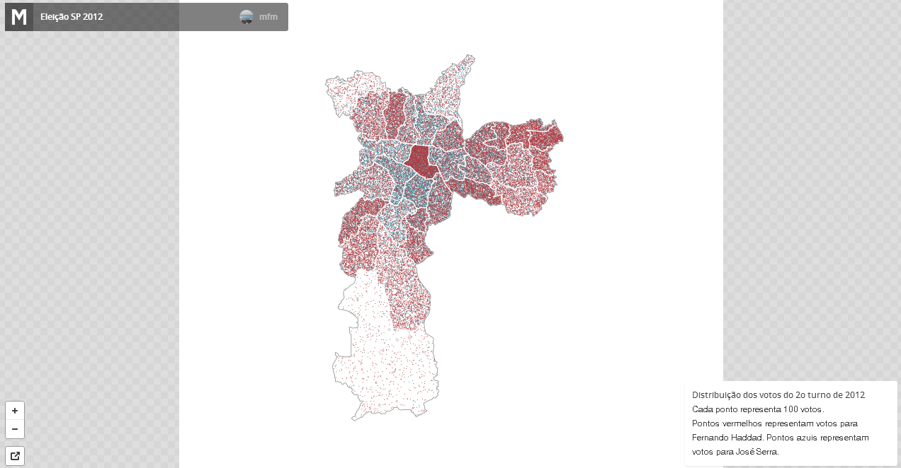
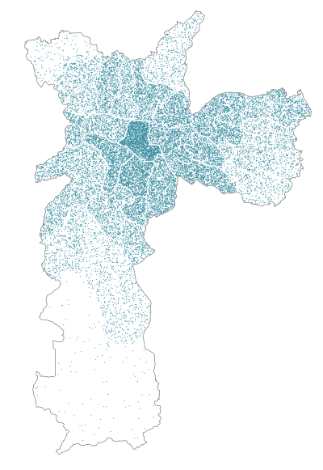

Eleições / Arquivo
Eleições (SP) + Mapas + R (ggmap)
Os votos na disputa pela Prefeitura de São Paulo vistos pela geografia dos locais de votação.
Publicação original
A distribuição geográfica dos votos de São Paulo é pauta comum dos mais diversos jornais, mobilizando a equipe de infográficos e análise de dados. Por um lado, dados eleitorais são atrativos naturais de análises estatíticas, potencializados pela sua disponibilização organizada e de fácil acesso. Por outro, existe uma fixação por parte das análises em revelar a existência de um correlação entre a distribuição geográfica dos votos com a divisão heterogênea de fatores socioeconômicos em um determinado lugar. No caso de São Paulo, a análise visual dos dados eleitorais invariavelmente resulta em alguma afirmação pouco elaborada de que a periferia vota de determinada maneira em oposição ao centro (aqui, aqui e aqui).
Aqui cabe uma grande ressalva: não pretendo encerrar a discussão ou trazer fatos contundentes sobre o perfil de votação de cada tipo de eleitor. Essa análise é apenas uma constatação de que é necessário ter muita cautela quando fazemos certos tipos de afirmação. Mais ainda, infográficos e análises estatísticas são ótimas ferramentas de análise; mas uma teoria (cientifíca ou não) sobre algum tipo de comportamento exige muito mais que algumas linhas de programação.
O que sempre me intrigou nessas análises é que as hipóteses subjacentes para construção desses mapas nem sempre são colocadas de maneira explícita, dificultando uma discussão honesta sobre o tema:
- A distribuição dos votos não coincide com o local da cidade em que o eleitorado reside/trabalha, mas representa o seu local de votação.
- O mapa representa os percentuais de votação em uma escala bi-color com intensidades diferentes, sendo a intensidade associada ao percentual de votos naquela região.
- O mapa não traz qualquer informação sobre o número de eleitores em cada zona eleitoral.
O primeiro ponto está diretamente associado à confidencialidade do voto e por isso é uma simplificação com a qual devemos conviver. É possível afirmar que as pessoas tendem a residir próximo do local de votação e quando mudam para uma região mais distante tendem a alterar também o local de votação. Mas essa seria uma hipótese bastante forte e deveria ser acompanhada de evidência robusta que pudesse corroborar a análise.
O segundo talvez sirva para o propósito específico de construir o argumento de polarização dos votos, que passa a ser incorporado diversos grupos de interesse. Do ponto de vista da comunicação, é mais fácil vender a história da polarização e da aparente cisão da cidade. Do lado político, os grupos parecem ter interesse em se apropriar do discurso.
O terceiro e último apenas mascara a importância da individualidade do voto: independente do percentual de votos de cada região, a eleição é definida pela soma dos votos individuais.
Pensando nisso, resolvi elaborar o mapa abaixo relativo ao 2° turno das eleições de São Paulo; a explicação de como ele foi realizado e sobre as minhas ressalvas em relação ao mapa estão elencados após o mesmo (clique para acessar o mapa feito no Mapbox):


Cada ponto no mapa acima representa 100 votos obtidos em uma das zonas eleitorais dentro de determinada subprefeitura, sendo os vermelhos para o Haddad e os azuis para o Serra. Obviamente, seria leviano dizer que não parece existir uma distribuição geográfica dos votos. Se olharmos com atenção a imagem animada abaixo, existe um aumento aparente dos votos da região periférica para o Haddad que fica mais claro quando alternamos as imagens (clique para ver a versáo ampliada). Porém, não parece tão óbvia a afirmativa de que “a cidade está dividida”. Na verdade, minha impressão é de que o Haddad ganhou justamente pelo contrário: sua distribuição de votos entre as regiões parece muito mais homogênea que a do adversário.


Enfim, o importante era levantar a discussão sobre esse tipo de análise e sobre o porquê não podemos ser tão apressados em categorizar e realizar afirmações conclusivas sobre determinados fatos. A realidade da cidade de São Paulo é certamente muito mais complexa aquela demonstrada em um simples mapa e exige parcimônia nas asserções. Não obstante, o display do mapa com o número de votos em cada subprefeitura certamente é novo e permite a visualização de quais regiões são de fato importantes na apuração das eleições.
A construção dos mapas acima exigiu um esforço considerável, apesar da simplicidade do produto final. Em primeiro lugar, foi necessário obter uma base das seções e zonas eleitorais georreferenciadas para utilizar os dados da eleição de 2012 no mapa. O Centro de Estudos da Metrópole (CEM) possui alguns shapefiles da cidade de São Paulo e mapas eleitorais, mas infelizmente não encontrei um arquivo com as seções organizadas e bem identificadas a ponto de poder utilizá-las para qualquer eleição (para quem tiver interesse, dados até 2006 estão disponíveis e georreferenciados no site do CEM). Por isso tive que contar com uma lista mais ou menos estruturada dos endereços das seções disponibilizadas pelo TRE-SP (link – os que tiverem curiosidade verão o porquê do “mais ou menos”).
A partir da lista e de algum esforço computacional consegui criar uma matriz de endereços e as zonas/seções eleitorais correspondentes com a qual pude realizar o georreferenciamento. O georreferenciamento de endereços pode ser realizado no R com o pacote ggmap, o qual utiliza a base do Google Maps e por isso está restrito à consulta de 2.500 endereços por período de 24 horas. A ressalva aqui é que apesar de ter conferido a localização de algumas seções na mão e verificar se todas estavam dentro do município de São Paulo não realizei uma análise rigorosa do georreferenciamento; no caso de uma base com muitos endereços similares poderia ter dados mal alocados no mapa (apesar disso ser minimizado pelo fato de ter informação do nome do colégio, endereço e bairro).
Com a base de zonas/seções eleitorais georreferenciadas e os dados eleitorais foi necessário unificar as informações de cada seção com o polígono da subprefeitura no qual ela se encontra. Para isso utilizei o QGIS, um software livre de mapas, com o qual foi possível unificar as informações e criar a visualização dos pontos representando o número de votos em cada candidato. A última ressalva é que existe sobreposição dos pontos no mapa, o que pode dificultar a distinção entre os votos para cada candidato nas regiões mais densas; por isso, criei a figura animada que permite visualizar os dados de maneira separada.
Como de costume, deixo um formulário abaixo para aqueles que quiserem mais informações sobre a análise acima. Os dados foram obtidos no site site do TSE (dados eleitorais), TRE (endereço das seções), Centro de Estudos da Metrópole (shapefile das subprefeituras) e todo o trabalho foi realizado no R (pacotes ggmap e reshape), QGIS e Mapbox.